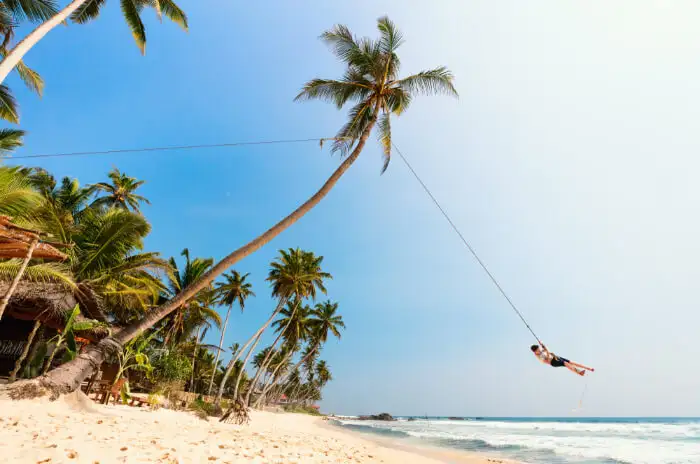

Unawatuna is a coastal town in Galle district of Sri Lanka.
Unawatuna is a major tourist attraction in Sri Lanka and known
for its beach and corals. It is a suburb of Galle, about 5 kilometres
(3.1 mi) southeast to the city center and approximately 108 kilometres (67 mi)
south of Colombo. Unawatuna is situated at an elevation of 5 metres (16 ft)
above the sea level. Despite significant development in the last decade it is
still home to the endangered and endemic purple-faced langur, an usually shy
monkey species that can only be found in Sri Lanka's forests.
Diving schools at Unawatuna assist the tourists to engage in diving at the beach.
Among the wreck dives are Lord Nelsom, a cargo ship that was wrecked about a
decade ago and 33m-long Rangoon.Snorkeling and surfing too are done at Unawatuna
though not extensively as nearby Hikkaduwa beach.
|
 |